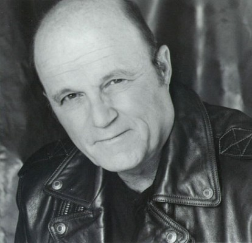

#1905 Der Schakal
Alternativ: The Jackal


 IMDB-Wertung: 6.4 / 10
IMDB-Wertung: 6.4 / 10  Metascore: 36
Metascore: 36 
Niemand kennt seine Identität, sein Ziel, seinen Zeitplan. Für ein Kopfgeld von 70 Millionen Dollar angeheuert, soll der Schakal eine der prominentesten Polit-Persönlichkeiten der Welt öffentlich töten. FBI und KGB setzen alles daran, das Attentat zu verhindern. Ihre Chancen dürftig. Der Killer ist zu schnell, zu wandlungsfähig, zu kaltblütig. Wo immer die Geheimdienste hinkommen, finden sie nur blutige Spuren. Ihre einzige Hoffnung ist jemand, der Gewalt aus erster Hand kennt und den Schakal womöglich identifizieren kann. Jemand wie der zu lebenslanger Haft verurteilte Ex-Terrorist Declan Mulqueen. Er gibt sein Wort, nicht zu flüchten. Wird er das Versprechen halten? Die Uhr tickt unerbittlich ...
Jahr: 1997
Dauer: 124 Minuten
FSK: 16
Land: USA Studio: Universal PicturesTonspuren: DTS - ,
Untertitel: Deutsch,
Auflösung: 1080p (1904x816) Größe: 6236 MB
Genre: Action, Abenteuer, Krimi, Thriller
Regisseur: Michael Caton-Jones
Drehbuch: Kenneth Ross, Chuck Pfarrer, Chuck Pfarrer
Soundtrack: Carter Burwell
Darsteller:
 Bruce Willis als The Jackal
Bruce Willis als The Jackal Richard Gere als Declan Mulqueen
Richard Gere als Declan Mulqueen Sidney Poitier als FBI Deputy Director Carter Preston
Sidney Poitier als FBI Deputy Director Carter Preston Diane Venora als Major Valentina Koslova
Diane Venora als Major Valentina Koslova- Mathilda May als Isabella Zanconia
 J.K. Simmons als FBI Agent T. I. Witherspoon
J.K. Simmons als FBI Agent T. I. Witherspoon Richard Lineback als FBI Agent McMurphy
Richard Lineback als FBI Agent McMurphy John Cunningham als FBI Director Donald Brown
John Cunningham als FBI Director Donald Brown Jack Black als Ian Lamont
Jack Black als Ian Lamont Tess Harper als The First Lady
Tess Harper als The First Lady Leslie Phillips als Woolburton
Leslie Phillips als Woolburton Stephen Spinella als Douglas
Stephen Spinella als Douglas Sophie Okonedo als Jamaican Girl
Sophie Okonedo als Jamaican Girl David Hayman als Terek Murad
David Hayman als Terek Murad Ravil Isyanov als Ghazzi Murad
Ravil Isyanov als Ghazzi Murad Maggie Castle als Maggie the 13-Year-Old Hostage
Maggie Castle als Maggie the 13-Year-Old Hostage- Karen Kirschenbauer als Speaker
- Terrence Currier als Surgeon General
 Daniel Dae Kim als Akashi
Daniel Dae Kim als Akashi- Michael Caton-Jones als Man in Video
- Peter Sullivan als Vasilov
- Richard Cubison als General Belinko
-  Jim Grimshaw als Green Beret Colonel
- Gregory Porter Miller als Paramedic
 Serge Houde als Beaufres
Serge Houde als Beaufres- James McCauley als CIA Representative #1
 Terry Loughlin als Davis
Terry Loughlin als Davis Ewan Bailey als Prison Guard
Ewan Bailey als Prison Guard John Harrington Bland als Dave
John Harrington Bland als Dave Jonathan Aris als Alexander Radzinski
Jonathan Aris als Alexander Radzinski Larry King als Larry King
Larry King als Larry King- Allen Altman als Car Salesman , uncredited
- Mike Azevedo als Student , uncredited
- Jim Clark als Narrator on TV , uncredited
- Tom Delmar als Postman Hitman , uncredited
- Sam Feuer als Highway Patrolman , uncredited
 Reese Foster als Injured Person , uncredited
Reese Foster als Injured Person , uncredited Mikhail Gorbachev als Himself , archive footage, uncredited
Mikhail Gorbachev als Himself , archive footage, uncredited- Jeff Johnston als Highway Patrolman , uncredited
- V.I. Lenin als Himself , archive footage, uncredited
- Lee Litas als Bathing Beauty , uncredited
- Jarmo Mäkinen als Ghazzi's Bodyguard , uncredited
 Ronald Reagan als Himself , archive sound, uncredited
Ronald Reagan als Himself , archive sound, uncredited- Tim L. Smith als Construction Worker , uncredited
 Dominic Paolo Testa als Party Attendee , uncredited
Dominic Paolo Testa als Party Attendee , uncredited- Steve Bassett als George Decker
- Yuri Stepanov als Victor Politovsky
- Walt MacPherson als Dennehey
- Laura Viederman als Woman in Video
- Bob Kingdom als Ambassador Koldin
Datei: X:\1997\Schakal, Der (1997, FSK16, 1904x816).mkv seit 01.09.2015
Festplatte: HD 1996-2002
 Es gibt insgesamt 83 Filme in der Gruppe '1997'
Es gibt insgesamt 83 Filme in der Gruppe '1997'